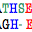
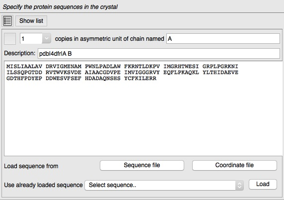
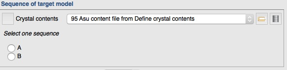
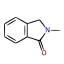

Contents
AU contents - Sequences
Sequence file formats
Sequence alignments in CCP4i2
Alignment file formats
Coordinate file formats
Ensemble coordinate files
Ligand geometry
 |
CCP4i2 — Model data: Sequences, alignments and coordinates |
| CCP4i projects | Experimental data | Model data | Atom selection | Servers |
|---|
The molecular replacement and model building tools either require or work much better if provided with the sequence of the structure to be solved. CCP4i2 stores the sequences in a AU content file and it is best to create this file using the Define AU contents task in the Import.. module. This task enables you to import sequences from a sequence file, a PDB coordinate file or to cut-n-paste into a sequence editor. If you subsequently want to edit the AU content you can open another Define AU contents task, import the existing file and then edit as you like.
If you need to add another sequence then click the Show list button at the top of the input shown above and click the '+' symbol to add another sequence to the list.
There are many different formats for sequence files and they are often poorly defined. CCP4i2 will attempt ot read any file it is presented - please check in the viewer that a file is read correctly. If a file contains multiple sequences you will be allowed to select one or more. If CCP4i2 has difficulty reading a sequence file please try the EBI readseq tool to convert to an acceptable format.
Where the AU content is input to tasks you will usually have the option to select one or more of the chains in the file.
The first line starts with >, then a word for the name of the sequence and the rest of the line is a description of the sequence. The remaining lines contain the sequence itself. Blank lines, spaces or other symbols (dashes, underscores, periods) are ignored.
>rnase This is the rnase sequence DVSGTVCLSALPPEATDTLNLIASDGPFPYSQDGVVFQNRESVLPTQSYGYYHEYTVITPGARTRGTRRIICGE ATQEDYYTGDHYATFSLIDQTC
A PIR (sometimes called NBRF) file contains one or more sequences in the form: Line 1: ">P1;" which includes a two-letter code defining the sequence type (P1, F1, DL, DC, RL, RC, or XX) followed by the database ID code. Line 2: text description of the sequence. Lines 3+: the sequence, which can include white space and '-' (that will be ignored) ending with "*" character. Optionally these can be followed by more lines describing the sequence. Example:
>P1; RNASE Chain A for Rnase DVSGTVCLSALPPEATDTLNLIASDGPFPYSQDGVVFQNRESVLPTQSYGYYHEYTVITPGARTRGTRRIICGE ATQEDYYTGDHYATFSLIDQTC*
A file in this format begins like:
<?xml version='1.0' encoding='UTF-8'?> <uniprot xmlns="http://uniprot.org/uniprot" xmlns:xsi="http://www.w3.org/2001/XMLSchema-instance" xsi:schemaLocation="http://uniprot.org/uniprot http://www.uniprot.org/support/docs/uniprot.xsd"> <entry dataset="Swiss-Prot" created="1997-11-01" modified="2015-02-04" version="125"> <accession>Q02555</accession> <accession>D6W065</accession> <accession>Q04008</accession> <accession>Q05038</accession>
CCP4i2 may download such files from the Uniprot website and save them in the project download directory.
Sequence alignments are used in CCP4i2 to create better molecular replacement models using the Truncate search model or Edit search model tools. There is an Align sequences with Clustalw task to align two or more sequences or an alignment from an alternative source can be used.
Aligment files contain multiple sequences formatted to indicate the equivalent residues. This usually requires spaces or dashes in an individual sequence where there is no equivalent residue. Alignment files often have extra 'consensus' lines with symbols indicating, for example, conserved residues.
Files from PsiBlast or HHPred servers such as http://www.ebi.ac.uk/Tools/sss/psiblast/ and http://toolkit.tuebingen.mpg.de/hhpred may contain mutliple sets of alignments and the CCP4i2 Import an alignment interface allows you to select one of those alignments to export in Clustal format.
The format is the same as the sequence format described above but with multiple sequences which may contain spaces or dashes.
The first line begins "CLUSTAL W" or "CLUSTALW" and can then have
annotation which is followed by blank lines that are ignored.
There are one or more blocks of sequence data separated by blank
lines. Each block consists of
one line for each sequence followed by a line showing the sequence conservation.
The sequence line consists of the sequence name, white space and up to
60 sequence symbols. There can be white space and a cumulative count of residues for the sequence.
The block ends with line showing the degree of conservation for the columns of the alignment in this block.
Gaps in sequences are represented using hyphens.
The characters used to represent the degree of conservation are
| * | all residues or nucleotides in that column are identical |
| : | conserved substitutions have been observed |
| . | semi-conserved substitutions have been observed |
| no match |
CLUSTAL 2.1 multiple sequence alignment
rnase_A --------------------------------------------------DVSGTVCLS-
1vjf_A MKTRADLFAFFDAHGVDHKTLDHPPVFRVEEGLEIKAAMPGGHTKNLFLKDAKGQLWLIS
*..* : *
rnase_A ALPPEATDT--LNLIASDGPFPYSQDGVVFQNRESVLP--TQSYGYYHEYT-----VITP
1vjf_A ALGETTIDLKKLHHVIGSGRLSFGPQEMMLETLG-VTPGSVTAFGLINDTEKRVRFVLDK
** : * *: : ..* :.:. : ::::. * * . ::* :: *:
rnase_A GART---------RGTRRIICGEATQEDYYTG----DHYATFSLIDQTC
1vjf_A ALADSDPVNFHPLKNDATTAVSQAGLRRFLAALGVEPMIVDFAAMEVVG
. :. .:* . : :. . *: :: .
Beware there may be problems reading this file if the conservation line is shorter than the sequence lines in the same block - the conservation line needs to have spaces on the end of the line where there is no conservation. Also there should be NO blank lines on the end of the file.
Also called PFAM format, is described http://sonnhammer.sbc.su.se/Stockholm.html
Is described http://scikit-bio.org/docs/0.2.2/generated/skbio.io.phylip.html
Blast stands for 'Basic Local Alignment Search Tool' - the objective of Blast is to find regions of sequence similarity and the output file shows only the similar regions and possibly not the full alignment of two sequences required by the tools in CCP4i2. There are alternative Blast output files and CCP4i2 will read only the XML file.
An HHPred file contains a header followed by a list of all hits with statistics and then an alignment for each hit.
Query pdb|1dfr|A B
Match_columns 159
No_of_seqs 222 out of 1085
...
...
No Hit Prob E-value P-value Score SS Cols Query HMM Template HMM
1 1zdr_A Dihydrofolate reductase 100.0 7.4E-46 2E-50 270.7 21.4 159 1-159 1-161 (164)
2 2w9h_A DHFR, dihydrofolate red 100.0 1.5E-45 4.1E-50 267.8 18.6 156 1-159 2-158 (159)
3 4m7u_A Dihydrofolate reductase 100.0 1E-44 2.8E-49 267.5 21.3 159 1-159 9-170 (176)
4 3ia4_A Dihydrofolate reductase 100.0 9.5E-45 2.6E-49 264.3 19.2 159 1-159 2-161 (162)
...
...
No 1
>1zdr_A Dihydrofolate reductase; DHFR, NADP, oxidoreductase; 2.00A {Geobacillus stearothermophilus} SCOP: c.71.1.0
Probab=100.00 E-value=7.4e-46 Score=270.69 Aligned_cols=159 Identities=39% Similarity=0.716 Sum_probs=0.0
Q ss_pred CEEEEEEECCCCcEECCCCCCCCCHHHHHHHHHHhCCCEEEEchhHHHhcCCCCCCCeEEEECCCCCCC-CCeEEECCHH
Q pdb|1dfr|A 1 MISLIAALAVDRVIGMENAMPWNLPADLAWFKRNTLDKPVIMGRHTWESIGRPLPGRKNIILSSQPGTD-DRVTWVKSVD 79 (159)
Q Consensus 1 ~i~~~~a~s~dG~I~~~g~~~W~~~~d~~~f~~~~~~~~ilmGr~T~~~~~~~~~~~~~iV~s~~~~~~-~~~~~~~~~~ 79 (159)
||++++|+|+||+||.+|++||+.++|+++|++.+.++++||||+||++++||+++|++||+||+...+ ++++++.|++
T Consensus 1 mi~l~~A~sldG~Ig~~g~l~W~~~~d~~~f~~~t~~~~vlmGR~T~e~~~~pl~~r~~iV~S~~~~~~~~~~~v~~~~~ 80 (164)
T 1zdr_A 1 MISHIVAMDENRVIGKDNRLPWHLPADLAYFKRVTMGHAIVMGRKTFEAIGRPLPGRDNVVVTGNRSFRPEGCLVLHSLE 80 (164)
T ss_dssp CEEEEEEEETTCEEEBTTBCSSCCHHHHHHHHHHHTTSEEEEEHHHHHHHCSCCTTSEEEEECSCTTCCCTTCEEECSHH
T ss_pred CEEEEEEECCCCcEECCCCcccCCHHHHHHHHHHhcCCEEEEchHHhhhccccCCCCEEEEEcCCCCCCCCCEEEECCHH
...
...
...
 An initial coordinate model is
created in Molecular replacement tasks or by model building
tasks such as Autobuild protein after Experimental
phasing. Improved models are created by extending and refining the
structure using Model
building and refinement tasks.
An initial coordinate model is
created in Molecular replacement tasks or by model building
tasks such as Autobuild protein after Experimental
phasing. Improved models are created by extending and refining the
structure using Model
building and refinement tasks.
There are two alternative file formats to represent macromolecular structures. Crystallographers are slowly moving from using long standing PDB format to using the more flexible MMCIF format. All CCP4i2 tasks can use either format.
A pdb file normally has the extension .pdb though files downloaded from the structure databases have the form pdbxnyz.ent. The file may have extensive header information, particularly if it is from a structure database, such as:
HEADER OXIDOREDUCTASE 14-JUL-10 3NXO TITLE PERFERENTIAL SELECTION OF ISOMER BINDING FROM.. .. .. CRYST1 84.150 84.150 77.968 90.00 90.00 120.00 H 3 9 ORIGX1 1.000000 0.000000 0.000000 0.00000 ORIGX2 0.000000 1.000000 0.000000 0.00000 ORIGX3 0.000000 0.000000 1.000000 0.00000 SCALE1 0.011884 0.006861 0.000000 0.00000 SCALE2 0.000000 0.013722 0.000000 0.00000 SCALE3 0.000000 0.000000 0.012826 0.00000
followed by atomic coordinates in the form:
ATOM 1 N VAL A 1 19.401 29.704 -2.475 1.00 24.77 N ATOM 2 CA VAL A 1 19.249 28.215 -2.218 1.00 21.14 C ATOM 3 C VAL A 1 19.972 27.926 -0.913 1.00 19.93 C ATOM 4 O VAL A 1 20.957 28.590 -0.597 1.00 18.52 O ATOM 5 CB VAL A 1 19.819 27.388 -3.372 1.00 23.70 C ATOM 6 CG1 VAL A 1 19.767 25.871 -3.097 1.00 23.27 C ATOM 7 CG2 VAL A 1 19.090 27.701 -4.705 1.00 24.61 C ATOM 8 N GLY A 2 19.456 27.017 -0.098 1.00 15.48 N ATOM 9 CA GLY A 2 20.053 26.668 1.166 1.00 13.83 C ATOM 10 C GLY A 2 21.098 25.532 1.080 1.00 12.09 C ATOM 11 O GLY A 2 21.850 25.441 0.092 1.00 12.97 O ATOM 12 N SER A 3 21.141 24.739 2.150 1.00 11.92 N ...
The full PDB format is formally described http://www.wwpdb.org/documentation/file-format-content/format33/v3.3.html.
An MMCIF file normally has the extension .cif but beware the format is very flexible and a cif format file might alternatively contain experimental data or other crystallographic data. The header of a cif file is very variable but likely contains the cell parameters in a form:
_cell.entry_id 1VDR _cell.length_a 70.870 _cell.length_b 59.450 _cell.length_c 78.150 _cell.angle_alpha 90.00 _cell.angle_beta 95.80 _cell.angle_gamma 90.00
The atomic coordinates are in the form:
loop_ _atom_site.group_PDB _atom_site.id _atom_site.type_symbol _atom_site.label_atom_id _atom_site.label_alt_id _atom_site.label_comp_id _atom_site.label_asym_id _atom_site.label_entity_id _atom_site.label_seq_id _atom_site.pdbx_PDB_ins_code _atom_site.Cartn_x _atom_site.Cartn_y _atom_site.Cartn_z _atom_site.occupancy _atom_site.B_iso_or_equiv _atom_site.Cartn_x_esd _atom_site.Cartn_y_esd _atom_site.Cartn_z_esd _atom_site.occupancy_esd _atom_site.B_iso_or_equiv_esd _atom_site.pdbx_formal_charge _atom_site.auth_seq_id _atom_site.auth_comp_id _atom_site.auth_asym_id _atom_site.auth_atom_id _atom_site.pdbx_PDB_model_num _atom_site.pdbe_label_seq_id ATOM 1 N N . GLU A 1 2 ? 0.460 -1.784 25.242 1.00 40.49 ? ? ? ? ? ? 2 GLU A N 1 2 ATOM 2 C CA . GLU A 1 2 ? 1.146 -0.578 25.666 1.00 38.88 ? ? ? ? ? ? 2 GLU A CA 1 2 ATOM 3 C C . GLU A 1 2 ? 2.671 -0.669 25.658 1.00 36.68 ? ? ? ? ? ? 2 GLU A C 1 2 ATOM 4 O O . GLU A 1 2 ? 3.268 -1.615 26.185 1.00 32.84 ? ? ? ? ? ? 2 GLU A O 1 2 ATOM 5 C CB . GLU A 1 2 ? 0.685 -0.189 27.070 1.00 41.47 ? ? ? ? ? ? 2 GLU A CB 1 2 ATOM 6 C CG . GLU A 1 2 ? 0.860 -1.234 28.155 1.00 44.68 ? ? ? ? ? ? 2 GLU A CG 1 2 ATOM 7 C CD . GLU A 1 2 ? 1.332 -0.644 29.475 1.00 49.47 ? ? ? ? ? ? 2 GLU A CD 1 2 ATOM 8 O OE1 . GLU A 1 2 ? 0.557 0.044 30.149 1.00 49.28 ? ? ? ? ? ? 2 GLU A OE1 1 2 ATOM 9 O OE2 . GLU A 1 2 ? 2.491 -0.882 29.820 1.00 51.50 ? ? ? ? ? ? 2 GLU A OE2 1 2 ATOM 10 N N . LEU A 1 3 ? 3.294 0.332 25.011 1.00 34.68 ? ? ? ? ? ? 3 LEU A N 1 3 ATOM 11 C CA . LEU A 1 3 ? 4.753 0.418 24.969 1.00 31.97 ? ? ? ? ? ? 3 LEU A CA 1 3 ATOM 12 C C . LEU A 1 3 ? 5.232 1.003 26.284 1.00 28.62 ? ? ? ? ? ? 3 LEU A C 1 3 ATOM 13 O O . LEU A 1 3 ? 4.657 1.960 26.784 1.00 26.46 ? ? ? ? ? ? 3 LEU A O 1 3 ATOM 14 C CB . LEU A 1 3 ? 5.220 1.308 23.809 1.00 32.60 ? ? ? ? ? ? 3 LEU A CB 1 3 ..
The MMCIF format is formally described http://mmcif.wwpdb.org
Ensemble coordinate files contain multiple putative model coordinates for a
structure that are used in some MR tasks such as Phaser.
The files are in the the usual coordinate formats: PDB or mmCIf but
use the 'MODEL' feature, normally used to support multiple NMR models,
to support multiple putative MR models.
Refinement programs attempt to make the structure geometry (bond
lengths and angles etc.) conform to
accepted ideal values that are given in a geometry library ($CCP4/lib/data/monomers). The
library
contains data for common macromolecular residues and ligands. If your
structure contains a novel ligand that is not in the library then the
Make Ligand task will make a Geometry file and a
coordinate file with an initial structure for a ligand. You can enter
either a SMILES
string or a MOL file or sketch the molecule with the
Lydia program. See Wikipedia. See Wikipedia. TLS
refinement
attempts to model the anisotropy in the motion of
a macromolecular structure by modeling the translation,libation and screw motion of
different domains of the structure. The TLS file input to the
Refinement task specifies the different domains of the
structure and the initial translation,libation and screw motion
tensors. For more detailed information see here.
Ensemble coordinate files
Ligand geometry
MOL files
Smiles strings
TLS files